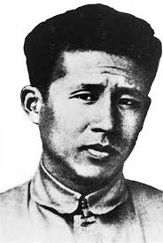

廖承志
廖承志（1908—1983），台湾人，中国共产党杰出领导人和革命家，长期从事党务、统一战线和国家建设工作，为国家发展和民族团结作出了重要贡献。
廖承志以坚定的政治信念、卓越的组织能力和宽广的国际视野著称，积极推动统一战线和党务工作，为国家稳定和发展提供了重要保障。
在家庭生活中，廖承志注重诚实、勤俭、责任感和子女教育。他强调个人品德与国家使命紧密结合，培养后代忠于国家、勤奋工作、服务社会的精神。
廖承志的家风和革命精神，为台湾及全国红色教育提供了宝贵范例。他的事迹激励后人坚持理想信念，为国家建设和民族团结不懈努力。
← 返回中国地图